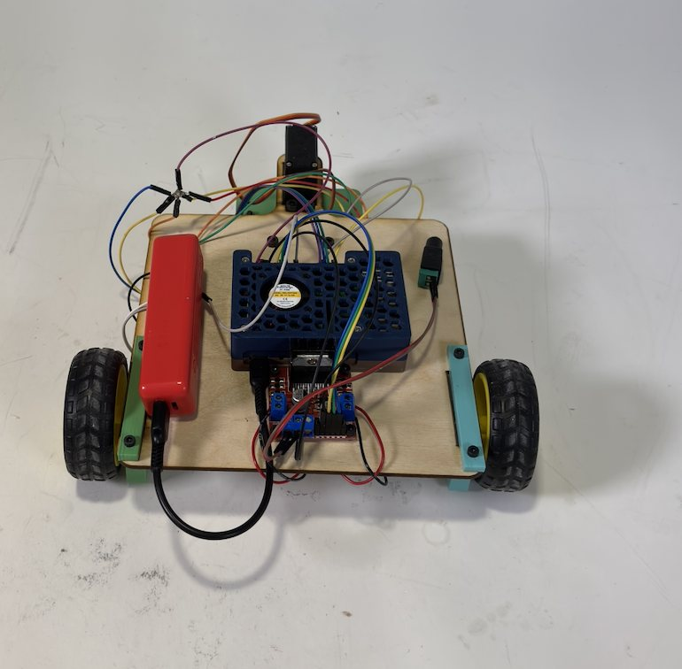
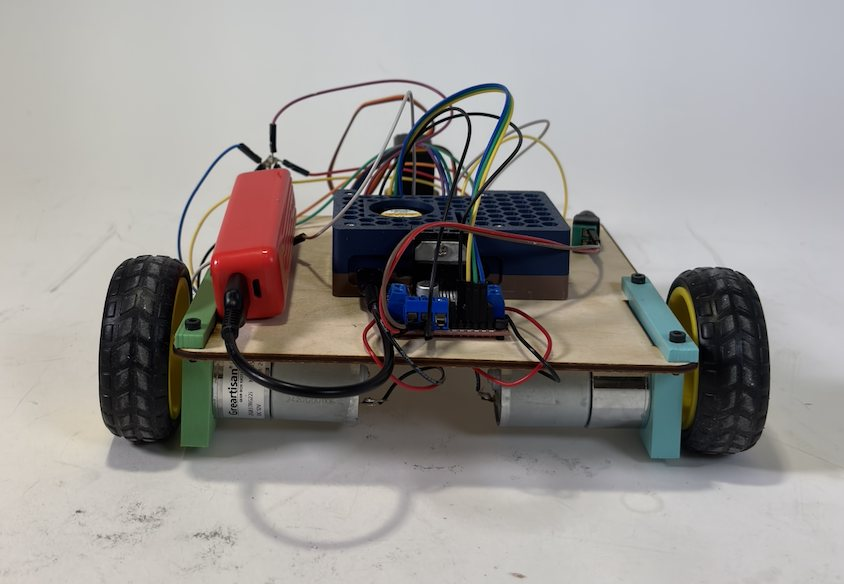
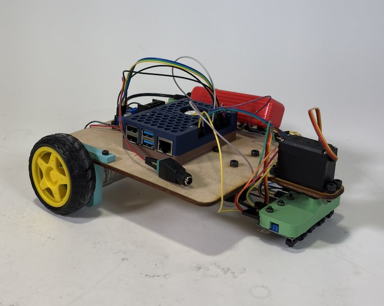
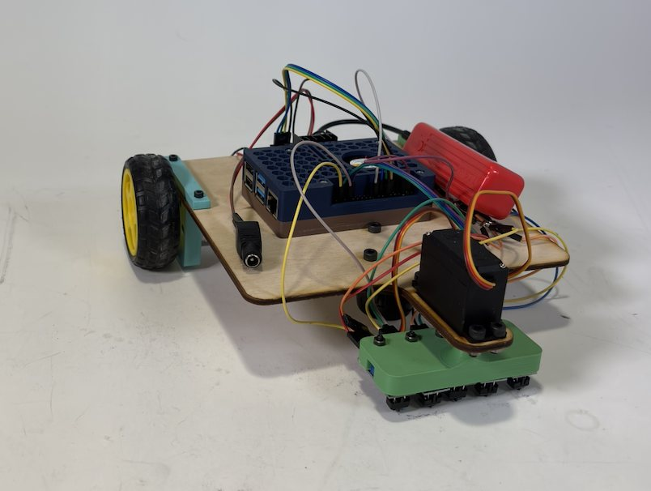
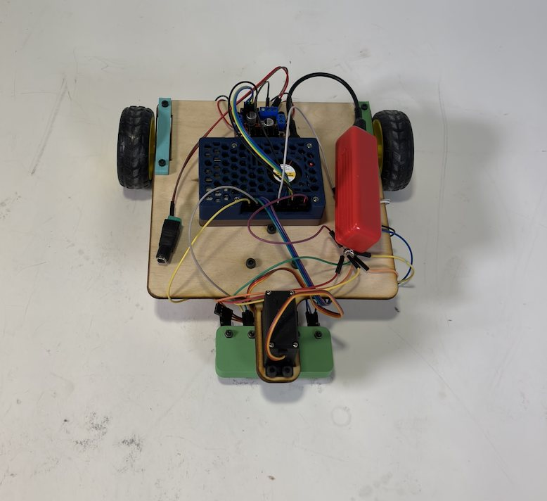
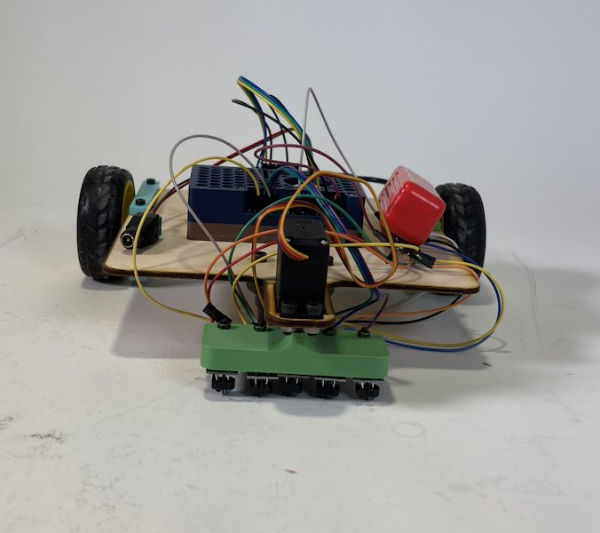
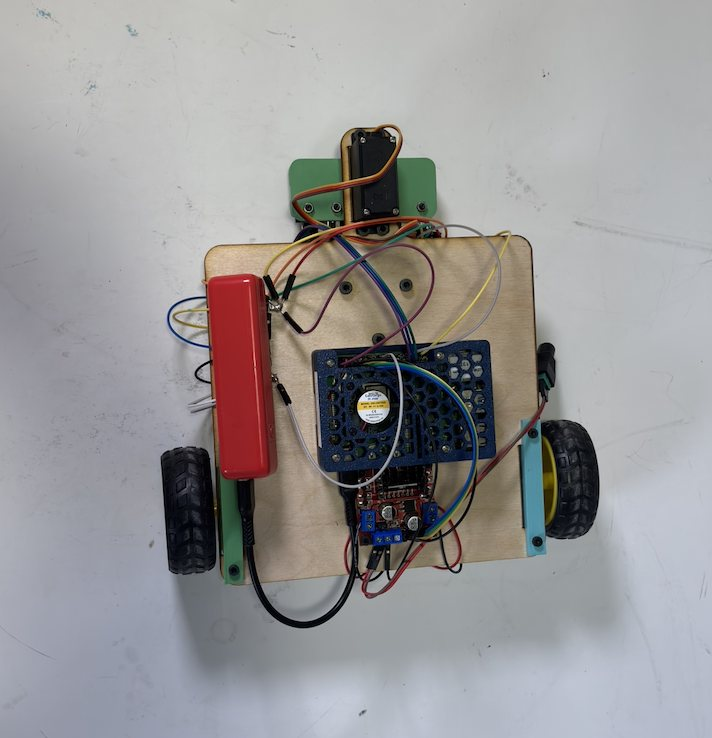
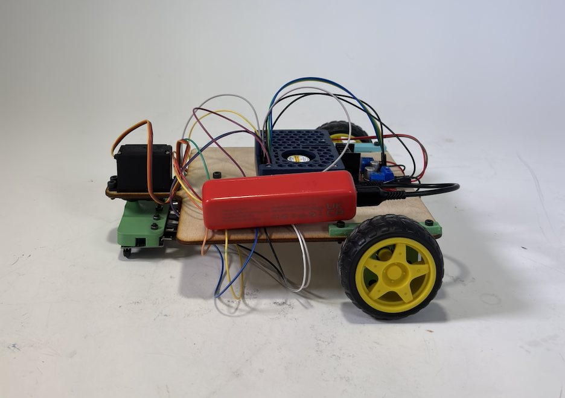
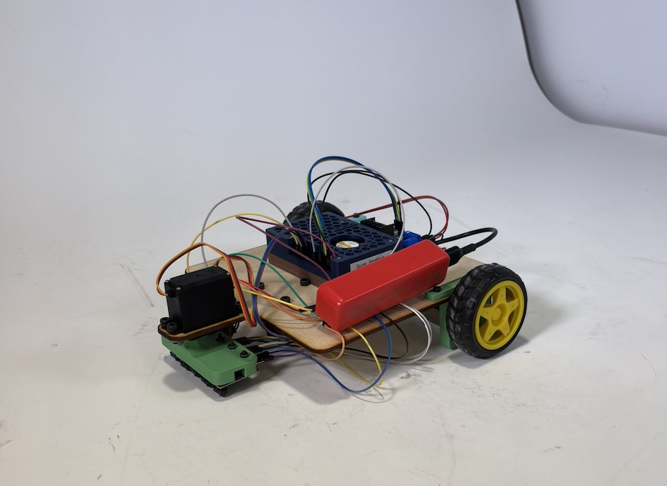

Project analysis
This project involves building a robot that follows a predefined path using at least three IR sensors, without using cameras or pre-made chassis. The robot must travel to the end of the path, turn around, and return. For improved performance, a 5+ sensor array with well-tuned PID control can be implemented to achieve smooth and accurate line tracking.
Follower in use
The video demonstrates the line follower in operation, showing that after the user types "start," the robot autonomously reads the three IR sensors and continuously adjusts its motion to stay on the line.
The Raspberry Pi monitors the left, middle, and right IR sensors to detect the position of the line relative to the robot. If the left sensor detects the line, the robot turns right; if the right sensor detects it, the robot turns left; otherwise, it moves forward. The motors are controlled using PWM signals through an L298N driver to adjust speed and direction smoothly. After reaching the end of the path (when all sensors detect the line), the robot performs a turn-around routine, searches for the line again, re-centers itself, and continues following the path back automatically.
How it was built
The robot is built on a custom chassis fabricated from laser-cut and hand-cut wooden plates, which were measured and drilled to precisely mount the motors, Raspberry Pi, and motor driver. The base structure was assembled using screws and spacers to ensure rigidity and proper alignment of the wheels. 3D-printed brackets were used to securely hold the IR sensor array at the correct height and angle relative to the ground.
Wiring was organized and routed manually, with soldered connections where needed to improve reliability. Overall, the fabrication process combined woodworking, basic machining (drilling and alignment), 3D printing, and careful mechanical assembly to create a stable and functional platform.
View Python code — IR sensing & motor control
import RPi.GPIO as GPIO
import time
GPIO.setmode(GPIO.BOARD)
IN1 = 29
IN2 = 33
IN3 = 36
#IN4 = 4
#IN5 = 5
GPIO.setup(IN1, GPIO.IN, pull_up_down = GPIO.PUD_DOWN)
GPIO.setup(IN2, GPIO.IN, pull_up_down = GPIO.PUD_DOWN)
GPIO.setup(IN3, GPIO.IN, pull_up_down = GPIO.PUD_DOWN)
#GPIO.setup(IN4, GPIO.IN, pull_up_down = GPIO.PUD_DOWN)
#GPIO.setup(IN5, GPIO.IN, pull_up_down = GPIO.PUD_DOWN)
# Define the GPIO pins for the L298N motor driver
OUT1 = 7
OUT2 = 11
OUT3 = 13
OUT4 = 15
# Set the GPIO pins as output
GPIO.setup(OUT1, GPIO.OUT)
GPIO.setup(OUT2, GPIO.OUT)
GPIO.setup(OUT3, GPIO.OUT)
GPIO.setup(OUT4, GPIO.OUT)
# Start each of the output pins as a PWM signal with a frequency of 100 Hz
m1 = GPIO.PWM(OUT1, 100)
m2 = GPIO.PWM(OUT2, 100)
m3 = GPIO.PWM(OUT3, 100)
m4 = GPIO.PWM(OUT4, 100)
# Set the initial duty cycle of each PWM signal to 0
m1.start(0)
m2.start(0)
m3.start(0)
m4.start(0)
OUT5 = 37
GPIO.setup(OUT5, GPIO.OUT)
GPIO.output(OUT5, GPIO.HIGH)
speed = 0.4
def forward():
m1.ChangeDutyCycle(0)
m2.ChangeDutyCycle(50 * speed)
m3.ChangeDutyCycle(0)
m4.ChangeDutyCycle(50 * speed)
def left():
m1.ChangeDutyCycle(50 * speed)
m2.ChangeDutyCycle(100 * speed)
m3.ChangeDutyCycle(100 * speed)
m4.ChangeDutyCycle(50 * speed)
def right():
m1.ChangeDutyCycle(100 * speed)
m2.ChangeDutyCycle(50 * speed)
m3.ChangeDutyCycle(50 * speed)
m4.ChangeDutyCycle(100 * speed)
def main():
try:
start_key = input(f"Enter \"start\" to begin: ")
while start_key != "start":
start_key = input(f"Enter \"start\" to begin: ")
start_time = time.time()
while True:
global left_ir, middle_ir, right_ir
left_ir = GPIO.input(IN1)
middle_ir = GPIO.input(IN2)
right_ir = GPIO.input(IN3)
print("NORMAL OPERATION: ", left_ir, middle_ir, right_ir)
if time.time() - start_time > 15:
if (left_ir == 1 and middle_ir == 1 and right_ir == 1):
print("TURNING AROUND")
right()
time.sleep(3)
print("BLIND SEARCH DONE")
left_ir = GPIO.input(IN1)
middle_ir = GPIO.input(IN2)
right_ir = GPIO.input(IN3)
while (right_ir == 0):
left_ir = GPIO.input(IN1)
middle_ir = GPIO.input(IN2)
right_ir = GPIO.input(IN3)
print("SEARCHING FOR LINE: ", left_ir, middle_ir, right_ir)
right()
time.sleep(0.01)
print("LINE FOUND")
while (middle_ir == 0):
left_ir = GPIO.input(IN1)
middle_ir = GPIO.input(IN2)
right_ir = GPIO.input(IN3)
print("CENTERING ON LINE: ", left_ir, middle_ir, right_ir)
left()
time.sleep(0.01)
print("LINE CENTERED")
start_time = time.time()
if left_ir == 1:
right()
elif right_ir == 1:
left()
else:
forward()
time.sleep(0.15)
except KeyboardInterrupt:
print("Exiting program...")
finally:
GPIO.cleanup()
if __name__ == "__main__":
main()Reflection
This project was successful in demonstrating a fully functional line-following robot, and all of the mechanical and electrical components worked reliably together. The chassis was stable, the motors responded consistently, and the IR sensors were able to detect and follow the line using basic turning logic.
However, if I had more time, I would have liked to implement a rotating sensor "wiper" using a servo motor to actively scan the area around the robot, which could improve line detection during sharp turns or recovery situations. I would have also fully implemented and tuned a PID control algorithm. While the robot follows the line using simple directional corrections, adding PID control would make the motion smoother, faster, and more precise by continuously adjusting motor speeds based on error rather than using discrete turns.
Gallery








